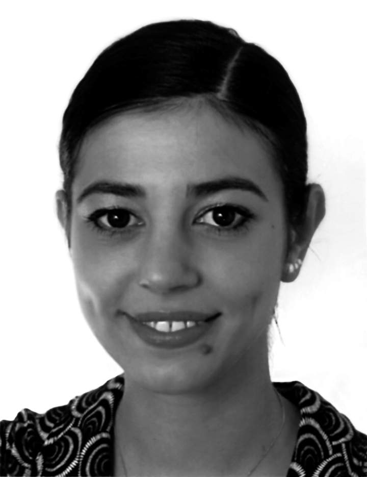

颜磊“上升空间”
箫岭
颜磊的所有作品均诉诸图像。在其早期作品中(如表演、装置等)，摄影大多只作为其作品本身存在（或曾经存在）的记录证明。然而自1998年底，图像在颜磊的艺术创作中扮演起了更为重要的角色，它成为其近期创作——绘画的主体。在颜磊目前采用的复杂工艺中，摄影作用于作品成型之前而非之后；也就是说，摄影成了图画的来源。尽管两者的秩序颠倒，但图像仍企图作为现实的“纪实摄影”而保持其原有价值。在此有必要提及的是颜磊将现实称作“废弃物”，但其描绘的一切都来自其日常生活，这样做的原因按颜磊的话说，即：“人得有潜能、潜力、一个心理上的内在动因…这是个交换的时代…我的作品是我个人对外在世界的精神反应，我只能这么说，是生活需要。”
颜磊尝试建立一种与世界疏离的关系、客观的交换，第一步通过摄影来很快地固定一个印象，第二步通过艺术作品来实践反思。此外，绘画不用照相机，一般没有那种机械性的精确度，但只有颜磊用其工艺，把握了任一机械或系统的科学本质。事实上，颜磊用一套计算机软件分析彩色照片资料，从而得以精确获取画面中形体的轮廓及亮度变化。这么一来，如果是单色画，那软件会针对每个颜色自动生成一个数值；对彩色画也是一样，使色彩在绘画中保持完全一致。然后，颜磊会放大所得图像的尺寸并直接喷绘在画布上，这样画布看起来就好像是原先那张照片的实体地图。一旦画布上的结构与轮廓固定，颜磊就可以根据先前采集的色彩数值来选用相应的颜料上色。按照画布上的线框填色后，画面被还原其立体存在。作品完成后，原本画布上的黑色网格线同色彩标号都会被颜料覆盖。
颜磊绘画的重要元素之一是丙烯酸颜料。这种化工合成的非天然颜料被颜磊用来勾画现实。用这种光滑亮丽的材质来表现我们如今后现代的色彩着实贴切，但也十分疏离。许多时候颜磊会统一画面中所有色彩的色调，这就好像为整张画罩了一层滤网。在其2002-2003年的系列作品“蓬皮杜项目”中(蓬皮杜艺术中心，展览“中国怎么样？”（Alors la Chine?），2003年6月25日－10月13日)，十三幅单色肖像画一共选用了四种颜色：青、黄、红、绿。2002年的系列“国际风景”(2002年上海双年展)虽是多色绘画，但其视觉效果却同单色一样地人工化。比如该系列中描绘悉尼歌剧院的无题绘画：黄色的建筑映着碧水蓝天，感觉很假。其色彩无外乎是用来与当代城市的灰调子形成鲜明对比的“装饰审美”之暗喻罢了。
然而除却其审美意图外，颜磊对色彩的运用还得从其对创作观念的支持上深入研究。如“国际风景”中颜磊呈现的是对全球不同城市中著名地标的透视。但这些图画所取材的照片并非是他在当地所拍的实景，而是来自深圳“世界之窗”，这座主题公园集成了全球各地历史名胜的一比一复制品。可谓“假作真时真亦假”。而观念在“蓬皮杜项目”系列中也极为重要。这组人物群像描绘了各国从清洁工到艺术评论人、学者、文化部官员在内，所有为艺术所吸引的人。每幅画作中的人物都是2002年颜磊在巴黎蓬皮杜艺术中心认识的，并都直接参与了展览“中国怎么样？”的筹划与布展工作。在该系列的第十三幅、也是最大的一幅画作中，颜磊描绘了他在蓬皮杜艺术中心外遇见的街头肖像画家。他说：“为什么他的作品没被认可而我的可以？为什么他坐在蓬皮杜外边而我在里面？我从中国去巴黎。他也去法国画画。许多中国人在国外的处境也常常如此，同时‘里外’。我去法国的时候也有这种体会。”而“国际风景”系列本身即是由多幅绘画组成的一件作品。颜磊玩味着呈现与现实之间的微妙界限。他以该系列不失趣味地推敲着个体的处境——并非作为一个人、而是一个人在社会中的身份问题。
颜磊的另一系列“上升空间”同样是对“艺术家为成功而争”、公共空间及现状之疑的暗喻。该系列包括作品：“三里屯”，有着许多餐厅酒吧的北京使馆区；“廊坊”，颜磊自己的笔记本电脑，它作为一种工具、也是对当今中国现状的象征；“香港艺术家园区”，画面主体貌似是红灯区；“香港上海银行”，银行立面也可看作经济繁荣的象征。在同一系列中，颜磊还拍摄了几家机场，如“香港启德机场”与“巴黎鲁瓦西机场”。中国有地方会形容“那个人如同机场”形象地比喻这个人很成功、人脉很广、社交圈大。不论颜磊是否认同上述情形，他本人肯定身处其中。作为一名艺术家，他被迫挤入这一“上升梯队”。颜磊坦言：“通过创作这些作品，我正面了自己作为一名艺术家存于世上的处境。承认艺术同样也有竞争，这是无可回避的问题。”
箫岭（Nataline Colonnello）
＊本文中所有引言均来自2003年3月10日与颜磊在北京的一次访谈。
翻译：顾灵

箫岭
1976年出生于意大利波代诺。毕业于威尼斯卡佛斯卡利大学（Università Ca Foscari Venezia），专修中国当代艺术。
2001 年以来常驻北京。2002－2003年，她作为一名独立编辑与艺术评论人为www.chinese-art.com供稿。她与诸多国际艺术机构、组织与收藏单位合作，介入各类研讨会与研究项目，定期发表评论文章，编写展览画册与专著。箫岭目前任职麦勒画廊（北京）的艺术总监